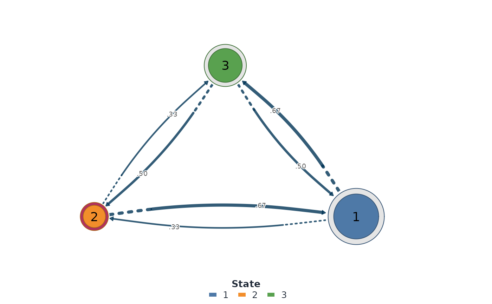

Plot One Per-Series Transition Network
Usage
# S3 method for class 'tsn_series_networks'
plot(x, y = NULL, series = NULL, ...)Arguments
- x
A
tsn_series_networksresult fromseries_networks().- y
Ignored.
- series
Series ID to draw. It may be omitted when the collection holds exactly one model.
- ...
Passed to
plot.ts_tna().
Examples
states <- discretize(c(3, 1, 4, 2, 5, 3, 6, 2, 7))
networks <- series_networks(ts_tna(states))
plot(networks, type = "network")
